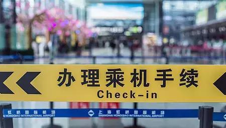
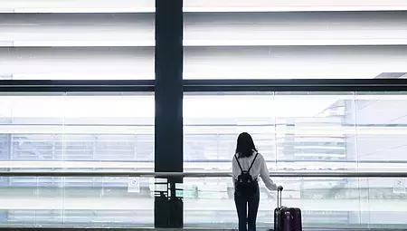
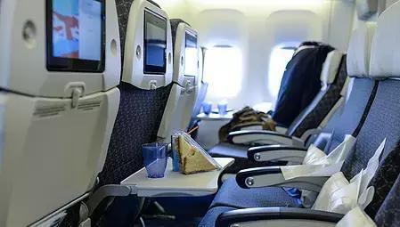

1.务必在飞机起飞前的半小时办好手续，因此，最好根据情况提前到机场，特别是黄金周、春运等人巨多的时候。有的机场非常严格，到时间了不让办就是不让办，比如北京机场。
2. 座位可以自由选。喜欢靠窗户位置的朋友可以在换登机牌的时候让办理人员给你安排一个靠窗位置，一般都没有问题，除非你去得很晚，位置都安排给别人了。
3. 托运的凭证一般贴在机票上，到达并取出行李后，会有工作人员检查托运凭证和行李上的标签是否相对应。小心别拿错别人的，把自己的丢了。

4. 乘坐飞机航班延误或取消
如果飞机晚点，机场一般会让乘客在候机大厅等候通知，如果延误时间较长，可以预定空铁管家的贵宾厅服务，进入贵宾厅休息候机。（空铁管家--机场、高铁站随时响应你的熟人！关注空铁管家，随时咨询！）
如果晚上的飞机告知当天不能飞了，就得看情况了。是飞机维修、航班调配等的原因，机场会提供食宿。由于天气、突发事件、空中交通管制等原因，就只能退票或改签了，这种情况机场是不管吃住的。
5. 航班超售
就是某个航班卖出的票数超过飞机座位数。为了保障自己的收益，几乎每家航空公司都存在一定比例超售的现象，为了避免到了机场被拿下而耽误行程的情况发生，有几点需要注意：
(1)越紧张的航线越容易超售。
(2)尽量早到机场，晚到的如遇超售情况就有可能被拿下。
(3)票打折越多的越容易被拿下，所以，买了打折票的同志，早点去办理手续为妙。

6. 起飞或降落时，如耳朵感觉不适，可张开嘴；嚼口香糖也有效，别噎着就行。
7. 在安全状况下，坐在飞机紧急出口的旅客绝对注意，无论如何不能因好奇提拉扶手，否则飞机将会迫降或失事。（千万注意！！！！）
8. 抽烟：禁止吸烟NO SMOKING的信号消失后，吸烟区内的旅客就可以随意吸烟了；但仅限于纸烟，烟丝和雪茄因机舱内空气调节速度不足以有效排除，故绝对禁止。
9. 如晕机，可向服务员要镇定剂，或打开空气调节孔吹冷空气，实在忍不住，并可以拿出呕吐袋来预备。遇到机舱内氧气密度不平衡，有呼吸困难、头痛、咳嗽、心脏不舒服等现象产生时，只要拉下头上的氧气罩套上，不久就可恢复正常。

10.老年人和心脏病患者旅行时，只要身体一般状况较好，心脏功能没有明显的障碍，也没有出现发生心脏急症的先兆，是完全可以坐飞机的，而且在长途旅行时应尽量选择坐飞机，但必须注意只能选择大型和中型的客机，绝对不要坐小型客机
 330445074@qq.com
330445074@qq.com